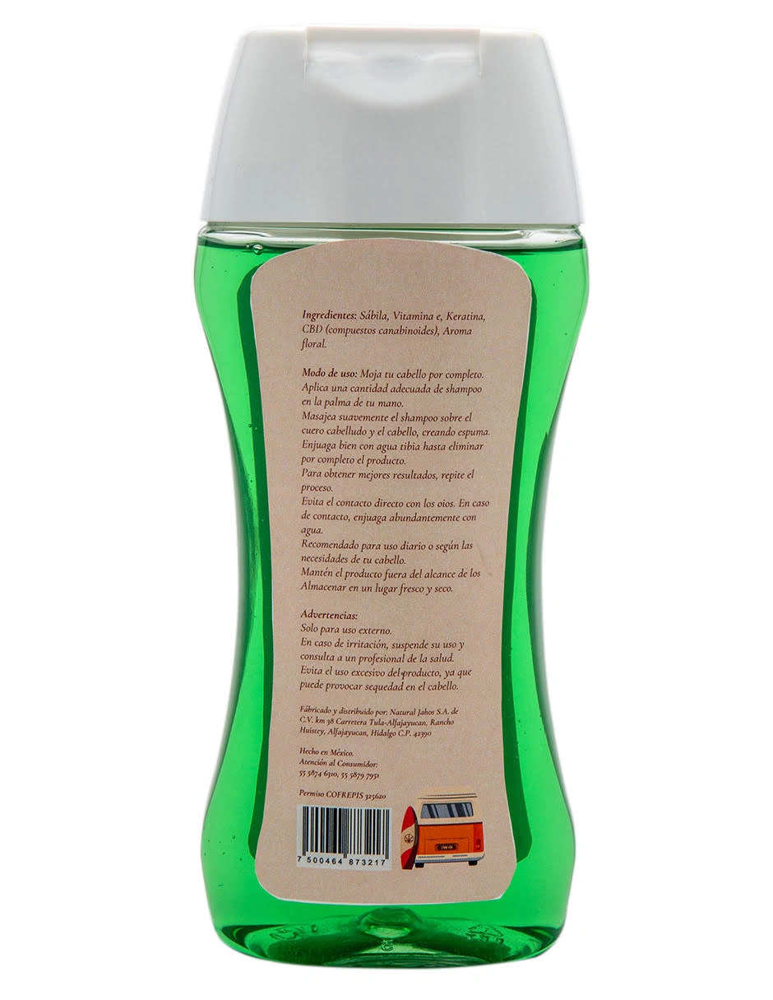

CBD • Cuidado consciente
Shampoo LFDM
Rutina simple, mente más ligera. Tu baño también es un ritual. Limpieza y cuidado diario para volver a ti sin prisa.
Dónde comprar →
Beneficios
Lo que puedes esperar
✨
Limpieza y frescura
Sensación de limpieza y frescura desde el primer uso.
🧘
Baja el ritmo
Rutina que ayuda a bajar el ritmo cuando la haces consciente.
💇
Cabello manejable
Cabello manejable con uso constante y cuidado responsable.

Instrucciones
Cómo usar
- Aplicar, masajear cuero cabelludo 30–60 segundos.
- Respirar lento 3 veces (sí, suena simple: pero funciona).
- Enjuagar con calma.
Ideal para
Para quién es
- Quien quiere bienestar desde lo cotidiano.
- Rutinas rápidas que se convierten en momentos de presencia.
FAQ
Preguntas frecuentes
Sí, como cuidado diario general (ajustar si hay tratamientos especiales).
Según tu ritmo: diario o interdiario.
Porque el bienestar también está en lo simple.
Avisos importantes
- Uso responsable: la información de este sitio es informativa y no sustituye asesoría médica.
- Nuestros productos no están destinados a diagnosticar, tratar, curar o prevenir enfermedades.
- Si estás embarazada/o, lactando o bajo tratamiento, consulta a un profesional de salud antes de usar cualquier producto.
Tu rutina, tu momento
Encuentra Shampoo LFDM en nuestros puntos de venta autorizados.
Dónde comprar →